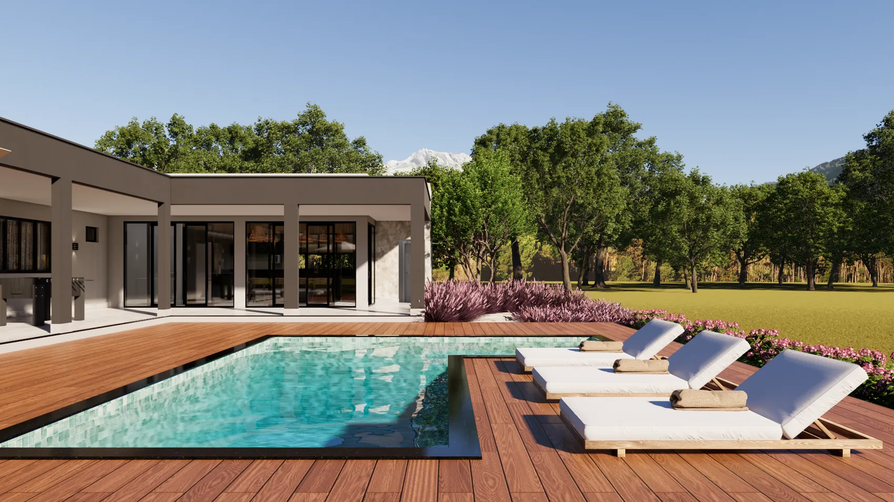
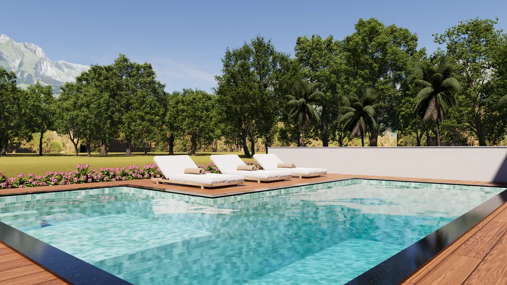
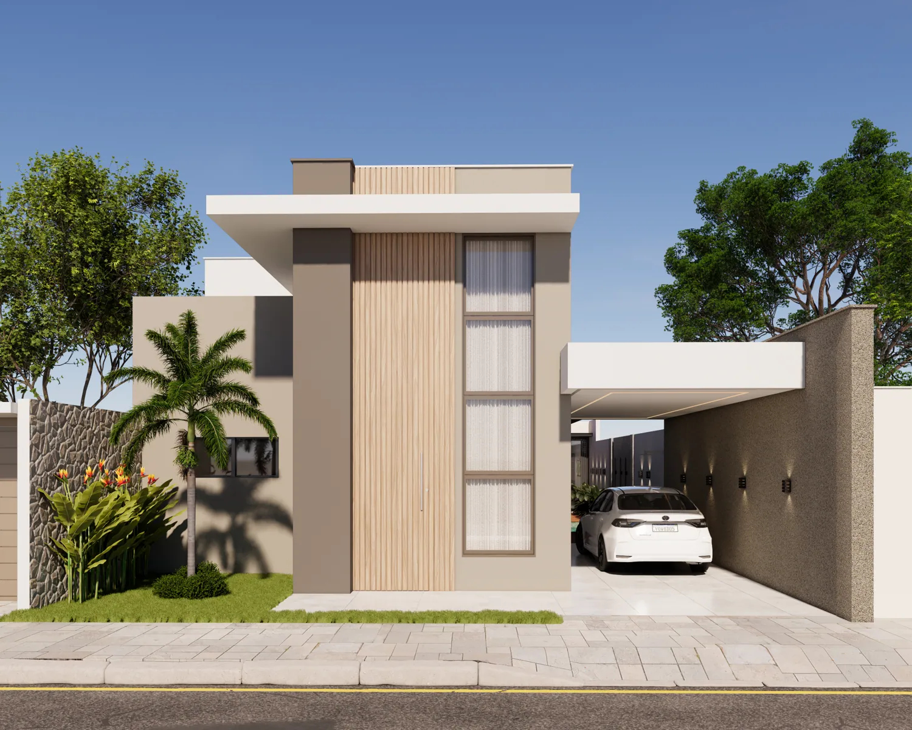
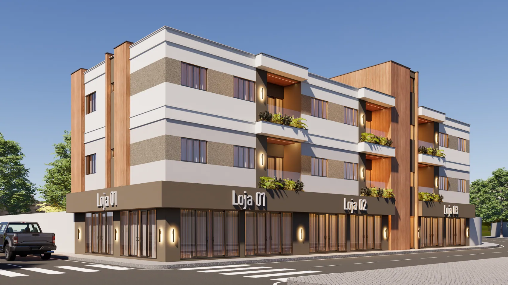
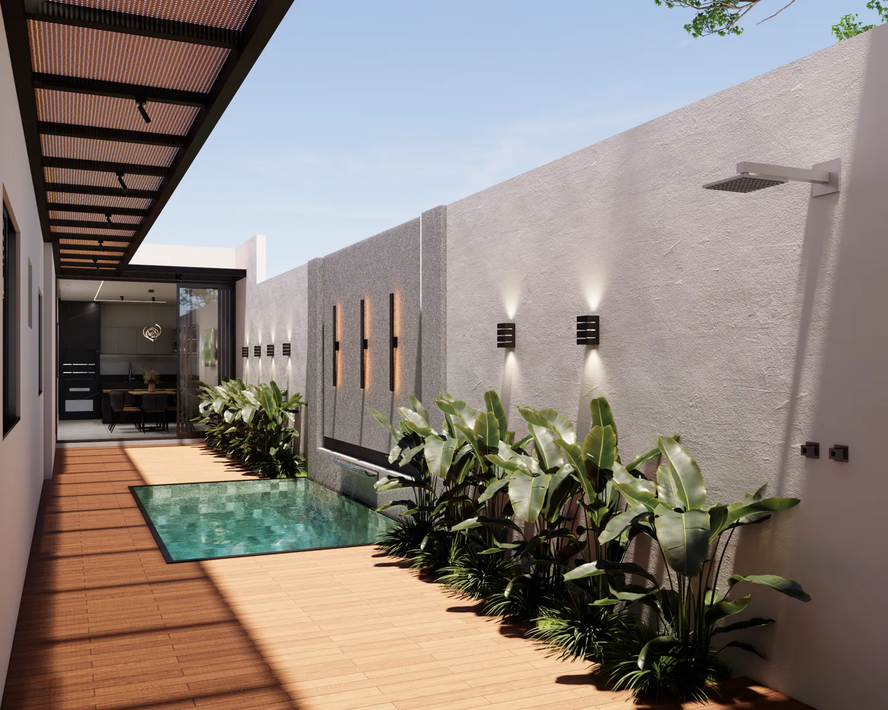
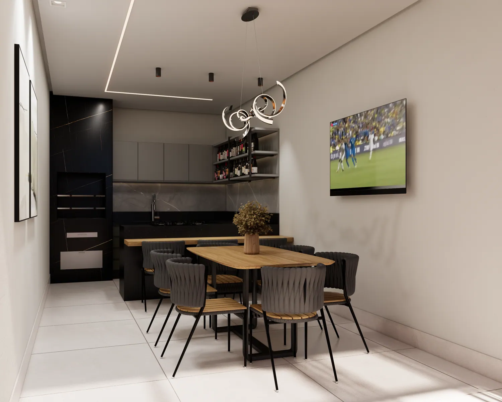

Arquitetura consciente
Projetar considerando o contexto, o clima, os recursos disponíveis e os impactos de cada escolha.

Arquitetura · Sustentabilidade · Bem-estar
Acreditamos que a verdadeira sofisticação está na harmonia entre arquitetura, natureza e qualidade de vida.
01 / Sobre nós
A arquitetura não se limita à criação de estruturas. Ela influencia comportamentos, desperta sensações e determina parte da experiência que temos nos espaços.
É dessa compreensão que nasce a Nativa: um estúdio de arquitetura e consultoria em sustentabilidade que aproxima arquitetura, natureza e bem-estar.
Unimos conhecimento técnico, sensibilidade estética e consciência ambiental para orientar escolhas mais inteligentes e desenvolver soluções que respeitam as particularidades de cada projeto.
Mais do que acompanhar tendências, buscamos uma arquitetura atemporal, funcional e conectada à natureza.
02 / Nossa filosofia
Acreditamos que luxo e sustentabilidade não são conceitos opostos. Nossa filosofia parte de cinco princípios.
Projetar considerando o contexto, o clima, os recursos disponíveis e os impactos de cada escolha.
Investigar materiais, tecnologias e sistemas construtivos que conciliem desempenho, durabilidade e menor impacto ambiental.
Incorporar princípios da biofilia, paisagismo e integração entre ambientes internos e externos.
Valorizar iluminação, ventilação, conforto térmico, funcionalidade e qualidade sensorial dos ambientes.
Desenvolver soluções que respeitem a personalidade, as necessidades e o estilo de vida de cada cliente.

O verdadeiro valor de um projeto está na qualidade de vida que ele proporciona.
03 / Nossas soluções
Atuação consultiva e soluções personalizadas para projetos residenciais e espaços de uso comercial.
Análise e orientação estratégica para incorporar princípios de sustentabilidade desde as primeiras decisões do projeto.
Estudo de alternativas como estruturas metálicas, alvenaria com tijolos ecológicos e outros sistemas, considerando viabilidade, desempenho, custo e características da obra.
Estratégias para integrar vegetação, elementos naturais e ambientes construídos, promovendo conexão com a natureza.
Orientação sobre iluminação natural, ventilação cruzada, orientação solar, conforto térmico e aproveitamento dos recursos naturais.
Apoio na concepção de ambientes que conciliem estética, funcionalidade, identidade e bem-estar.
04 / Portfólio visual
Uma seleção visual de projetos e estudos compartilhados pela Nativa.




05 / Nossa abordagem
Não acreditamos em soluções universais. Nosso processo parte da compreensão do contexto e das oportunidades de cada espaço.
Conhecemos suas necessidades, expectativas, referências e objetivos.
Analisamos o espaço, as condições existentes e as possibilidades de intervenção.
Apresentamos alternativas fundamentadas em critérios técnicos, ambientais e econômicos.
Transformamos as diretrizes escolhidas em soluções adequadas ao escopo contratado.
Quando previsto no serviço, acompanhamos a implementação das soluções e as decisões do projeto.
06 / Por que Nativa?
Consideramos o projeto em sua totalidade: aparência, desempenho, clima, materiais, funcionalidade e a experiência de viver no espaço.
07 / O próximo passo
Construir, reformar ou transformar um ambiente envolve decisões importantes. A Nativa está aqui para ajudar você a fazer essas escolhas com clareza e consciência.
WhatsApp: (77) 9824-9600